Opening Ceremony
Eduardo Gómez Ramírez, Sabine Mondié Cuzange, Mélie Cornet
Universidad La Salle Mexico
Mexico City, Mexico
June 16 - 19, 2026
Important Dates:
Registration Open: May 15, 2026
Deadline: June 1, 2026
*Registration is limited.
The Third Summer School on Control of Complex Robotic Systems (CCRS 2026), is an international academic event for students, researchers, and faculty interested in advanced robotics and motion control. As robotic systems become more complex, their control demands stronger tools to address nonlinear dynamics, actuation constraints, environmental interaction, and real-time operation. CCRS 2026 offers an intensive learning space where participants can engage with current challenges through lectures, simulation, and applied discussions. The school builds on the success of its previous editions, held by Automatic Control Department at CINVESTAV in Mexico City in 2024 and 2025 under the academic leadership of Ph.D. Ahmed Chemori and Dr. Jorge Torres Muñoz. In 2026, Universidad La Salle Mexico joins this trajectory as the new host institution, with Dr. Hipólito Aguilar Sierra serving as organizer from La Salle México. This new edition preserves the scientific strength of the series while expanding its academic and institutional scope. The program includes lectures on underactuated robotic systems, parallel manipulators, autonomous underwater vehicles, gait control, wearable rehabilitation exoskeletons, connected robotic systems, and vision and AI for complex robotics. It also features poster sessions, a MATLAB and Simulink laboratory course, live demonstrations, and a guided visit to the Innovation iLabs at the Center for Transdisciplinary Research, Development and Innovation (CeTIDi) of La Salle Mexico. In addition, the Three Minutes Thesis competition for doctoral students creates a valuable opportunity to present research, strengthen communication skills, and connect with an international robotics community.
Participation in the CCRS 2026 summer school is completely FREE of charge.
Underactuated systems, parallel manipulators, and underwater vehicles.
Gait control and wearable rehabilitation exoskeletons.
Registration is subject to Limited availability.
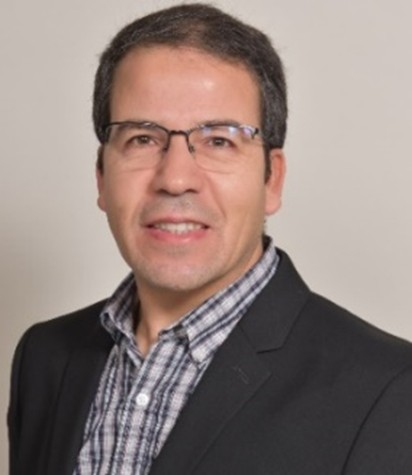
Senior Researcher, LIRMM, CNRS / University of Montpellier
Ahmed CHEMORI received the M.Sc. and Ph.D. degrees in automatic control from the Polytechnic Institute of Grenoble, France. He is currently a Senior Researcher at the CNRS in automatic control and robotics, affiliated with LIRMM laboratory. His research interests include nonlinear control (robust, adaptive, and predictive approaches) and their real-time applications in various areas of robotics, including parallel robotics, underwater robotics, wearable robotics, and underactuated systems. He has co-supervised 26 Ph.D. theses and more than 40 M.Sc. theses, and is the author of over 190 scientific publications.
All times are local to Mexico City (UTC-6).
Eduardo Gómez Ramírez, Sabine Mondié Cuzange, Mélie Cornet
Speaker: Ahmed Chemori
Speaker: Ahmed Chemori
Speaker: Ahmed Chemori
Speaker: Ahmed Chemori
Speaker: Ahmed Chemori
Speaker: Ahmed Chemori
Speaker: Ahmed Chemori
Speaker: Hipolito Aguilar Sierra
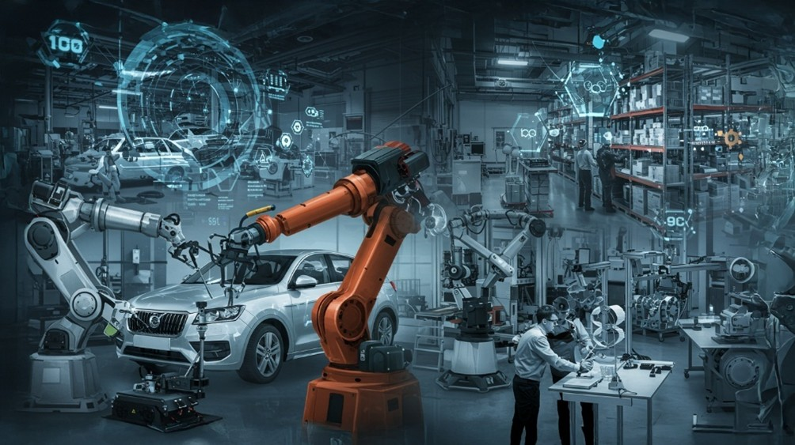
Robotics is an interdisciplinary branch of engineering that includes mechanical engineering, electrical engineering, computer engineering, control engineering and others. It deals with design, construction and use of robots, as well as computer systems for their control, sensory feedback, and information processing. It may overlap with different fields such as electronics, computer science, mechatronics, artificial intelligence, nanotechnology and bioengineering. Robotics was initially and for a long time guided by needs in industry. Indeed, the early years of robotics was largely focused on robotic manipulators, mainly used for simple and repetitive automation tasks. The first industrial robot manipulator appeared in 1961 in the assembly lines of General Motors. Year after year, the progress of robotics and automation, as well as their associated innovative applications, have been noticed every day through the consideration of more and more complex tasks needing higher performances; such as those for operating in dangerous and hazardous environments. These complex and challenging tasks require a deeply understanding of robotic systems in different points of view, including mechanical design, kinematics and dynamic modelling, sensing, actuation, control design, optimization, etc. Nowadays, robotics is highly advanced, including different fields and applications; namely industrial robotics, mobile robotics, bioinspired robotics, micro-robotics, humanoid robotics, aerial robotics, space robotics, marine robotics, medical robotics, service robotics, wearable robotics, etc. This talk will give an overview of most of these robotic fields through various videos illustrating needs, challenges and applications.
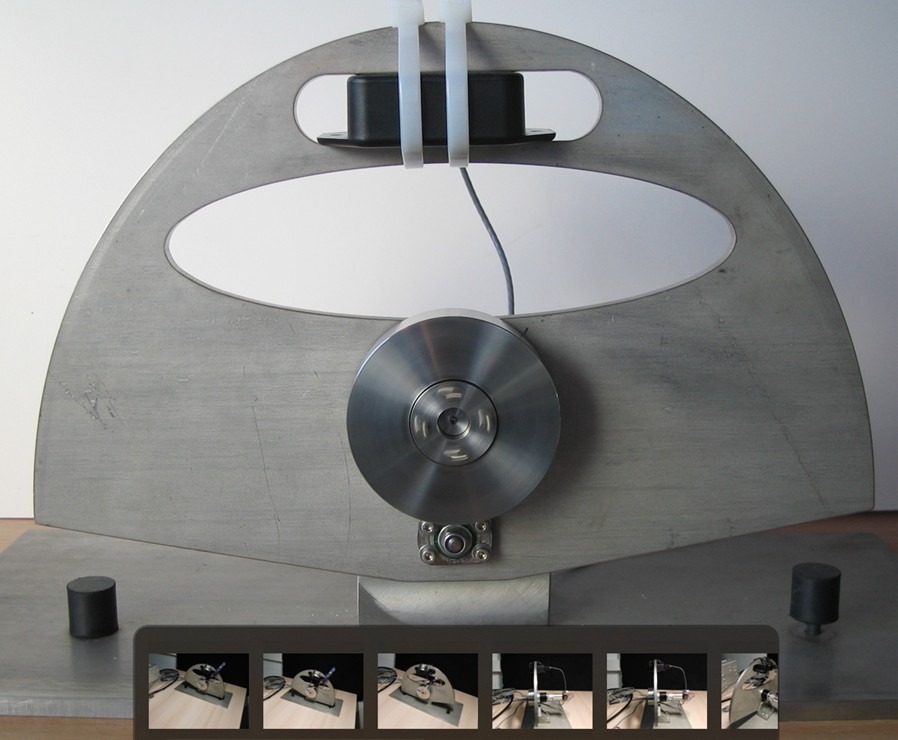
Underactuated mechanical systems are those systems with less control inputs than generalized coordinates (degrees of freedom) i.e. they have generalized coordinates that are not actuated, and this is a source of dynamic constraints which are generally non integrable and therefore second order non-holonomic. Many examples of such systems exist, mainly in robotics, they include, among others, the underactuated robot manipulators, the gymnast robots and particularly the acrobot, the pendubot, the Planar Vertical Takeoff and Landing (PVTOL) aircrajs, some undersea vehicles and other mobile robots. Another basic feature of this class of systems is the nonlinear dynamics that they have; moreover, their actuated coordinates are nonlinearly coupled with the unactuated coordinates. This talk deals with control of underactuated mechanical systems, where two main problems have been studied; the first one concerns stabilization around unstable equilibrium point, whereas the second one deals with stable limit cycle generation. The proposed control methods are illustrated through numerical simulations as well as real-time experiments on different examples of underactuated mechanical systems and mainly the inertia wheel inverted pendulum.
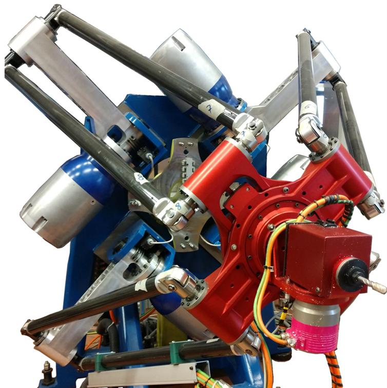
Serial robot manipulators consist of a set of sequentially connected links, forming an open kinematic chain. These robots are mainly characterized by their large workspace and their high dexterity. However, in order to perform tasks requiring high speeds/accelerations and high precision; such robots are not always recommended because of their lack of stiffness and accuracy. Indeed, parallel kinematic manipulators (PKMs) are more suitable for such tasks. The main idea of their mechanical structure consists in using at least two kinematic chains linking the fixed base to the travelling plate, where each of these chains contains at least one actuator. This allows for a distribution of the load between the chains. PKMs have important advantages with respect to their serial counterparts in terms of stiffness, speed, accuracy and payload. However, these robots are characterized by their highly nonlinear dynamics, actuation redundancy, kinematic redundancy, uncertainties, singularities, etc. Besides, when interested in high speed robotized repetitive applications, such as food packaging tasks, the key idea relies in looking for short cycle times. This talk will give an overview of some proposed advanced control solutions for high-speed applications of PKMs in food packaging tasks. The proposed solutions are mainly based on nonlinear adaptive control techniques and have been validated through real-time experiments on different prototypes.
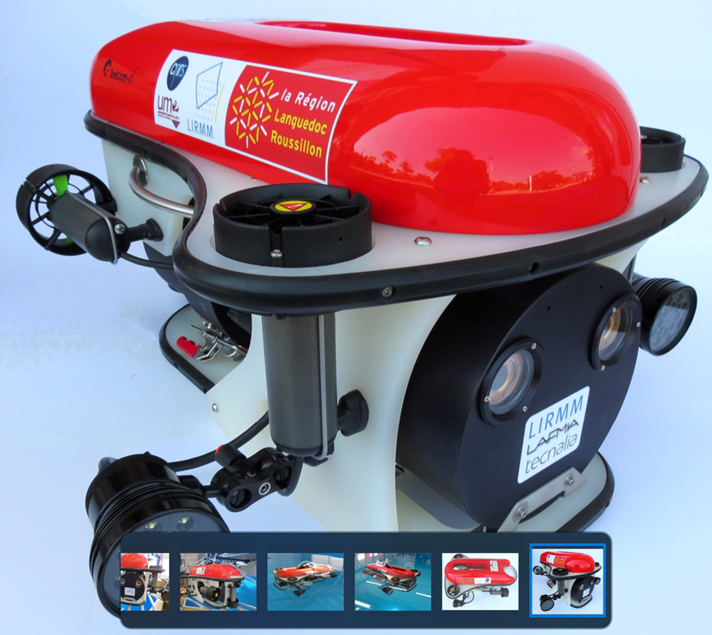
Underwater vehicles have gained a widespread interest in the last decades, from various research communities (design, actuation, perception, modelling, control, etc.), given the multiple tasks they can accomplish. Their applications are multiple and various in different fields such as dams’ inspection, oil and gas industry, fish farms, wind parks, hydroelectric power stations, underwater archeology, ocean cartography, air crash and environmental investigations, etc. Control of underwater vehicles is a thoroughly investigated subject but still an open research problem. Indeed, when we are interested in autonomous control of underwater vehicles (ROVs, AUVs, ASVs, bioinspired, etc.) different control challenges may arise. They are mainly due to the inherent high nonlinearities and time varying behavior of their dynamics subject to hydrodynamic effects and environmental disturbances. This talk will be focused control challenges of small tethered underwater vehicles and some proposed control solutions. Different control solutions, mainly issued from adaptive control, will be then presented and discussed. All the proposed controllers will be illustrated through real-time experiments on different underwater vehicles.
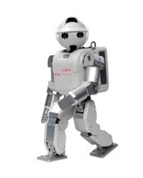
Walking gait control is one of the most important research problems in humanoid and wearable robotics. Indeed, when interested in walking gait control two inherent challenging issues may arise; namely pattern generation and control design. This presentation will be focused on the second challenge dealing with control design for dynamic walking. It will be organized around two main parts; the first one is a general introduction to humanoid robotics, including a brief overview of its basic principles, before emphasizing the problem formulation involving the two above mentioned challenges. The second part will be devoted to walking gait control, where this problem is resolved through a human-data-based control architecture for pattern generation and dynamic walking control. The proposed method in this case deals with whole-body control, where a motion capture system is used to acquire the necessary data to reproduce human-like motions on a humanoid robot. However, unlike most of the techniques from the literature, where a big amount of data is used, only feet and CoM positions are needed to describe the most relevant features of a human walking. The redundancy in the humanoid model is then considered to track these two objects using task formalism. The proposed solution is validated through numerical simulations as well as real-time experiments on the humanoid robot HOAP3, for different motion scenarios.
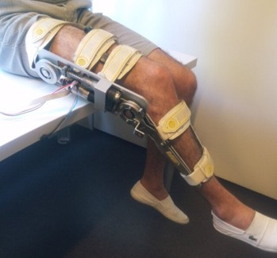
Assisting disabled and elderly people in daily activities using wearable devices has gained a particular interest these last decades due to the highly increasing rate of dependent people. The rise in life expectancy is set to continue; combined with the decrease in birth rates, this should accelerate more the aging of the population. Consequently, this will certainly have a great impact on the development of assistive wearable devices. Thanks to the latest advances in portable device technologies in terms of compact/miniaturized design, low cost and energy consumption, their wearability has known an important development. Indeed, human wearable devices such as exoskeletons, wearable bio-sensors and wearable simulators are no more considered as fiction science. Furthermore, this field is attracting more and more researchers from different communities (mechanical design, sensors, actuators, control design, etc.) in the last decade. In terms of data measurement, different sensing systems are ojen used in wearable devices, namely EMG (muscular activities), IMU (human posture), Force sensors (contact with the ground), etc. This talk will be focused on wearables robotics challenges, recent advances in this field, and some proposed control solutions for exoskeletons. The proposed control solutions will be illustrated through numerical simulations as well as real-time experiments.
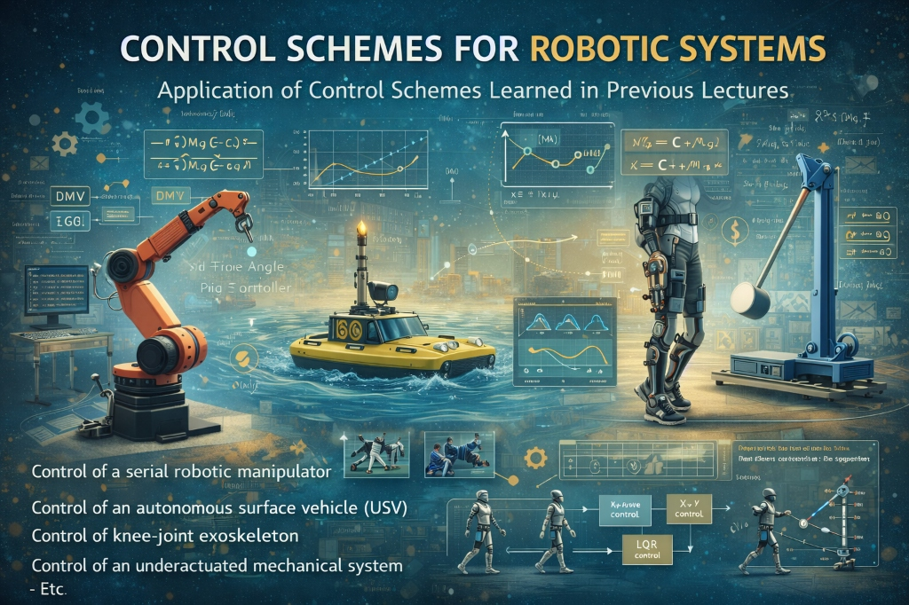
Application of some control schemes, learned in previous lectures, to robotic systems. The participants will have the choice among various subjects, including: - Control of a serial robotic manipulator - Control of an autonomous surface vehicle (USV) - Control of knee-joint exoskeleton - Control of an underactuated mechanical system - Etc.
The 3 Minute Thesis session is a short academic presentation activity for doctoral students within the Summer School. Its purpose is to help PhD candidates present the core of their research in a clear, engaging, and accessible way within only three minutes. Each student is expected to explain the problem addressed, the main objective, the proposed approach, and the relevance or impact of the work, using concise and understandable language for a broad academic audience. This format strengthens scientific communication skills, promotes interdisciplinary exchange, and gives students an opportunity to share their research progress with peers, faculty, and invited experts in a dynamic and professional setting. This activity will be held subject to the number of registered participants.
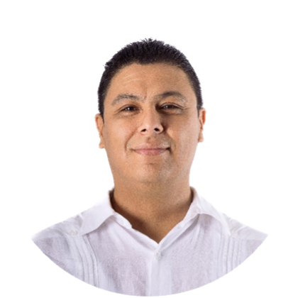
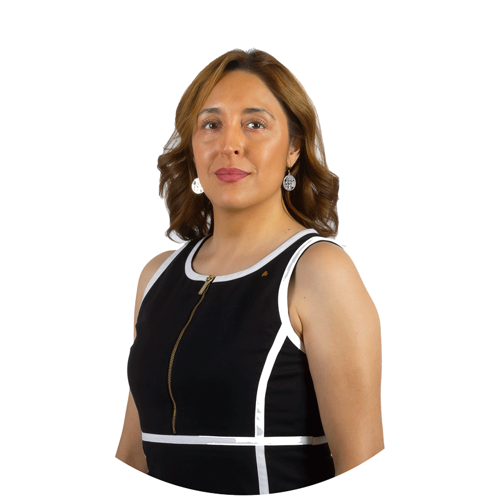
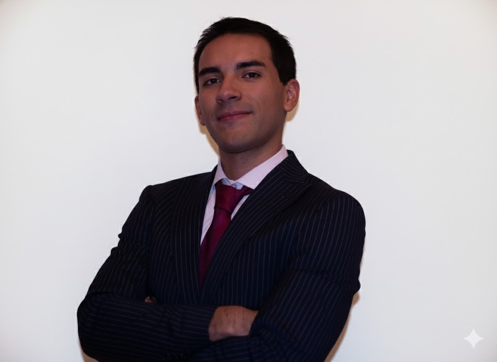
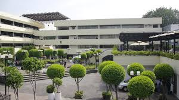
Center for Transdisciplinary Research, Development and Innovation (CeTIDI)
Mexico City, Mexico
Contact: hipolito.aguilar@lasalle.mx
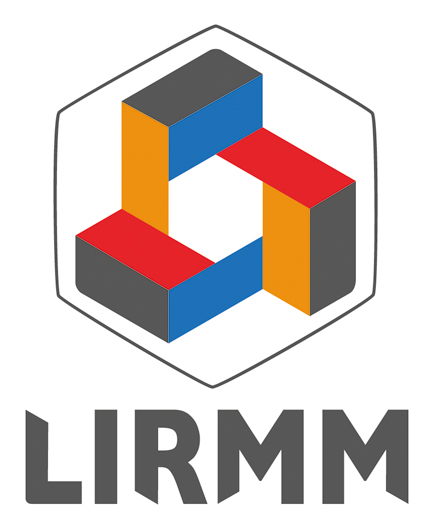
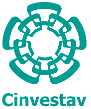
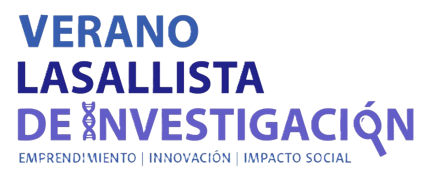
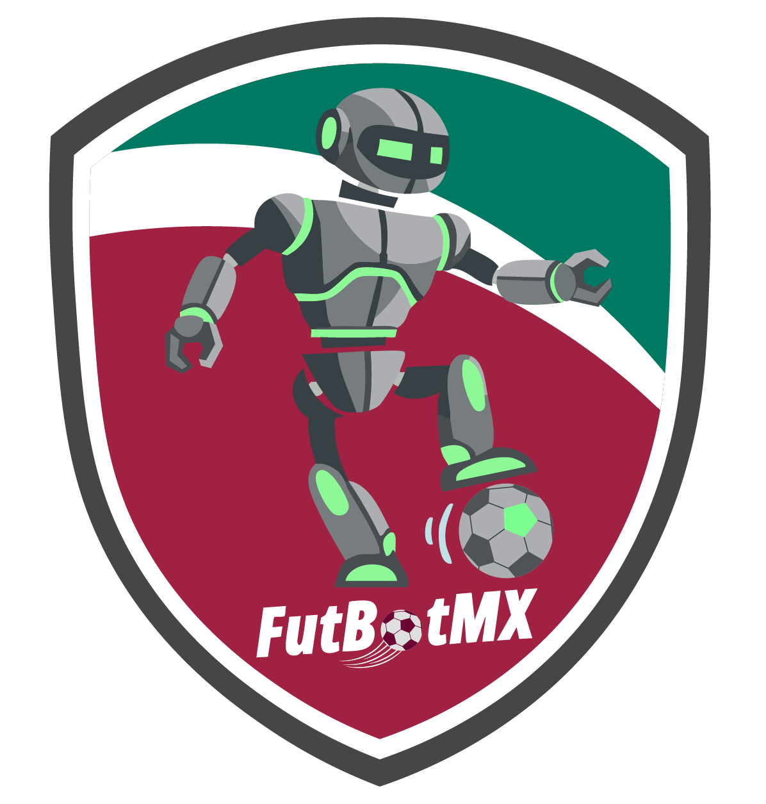